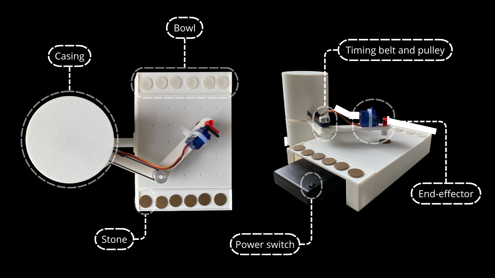
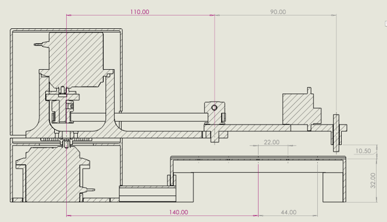
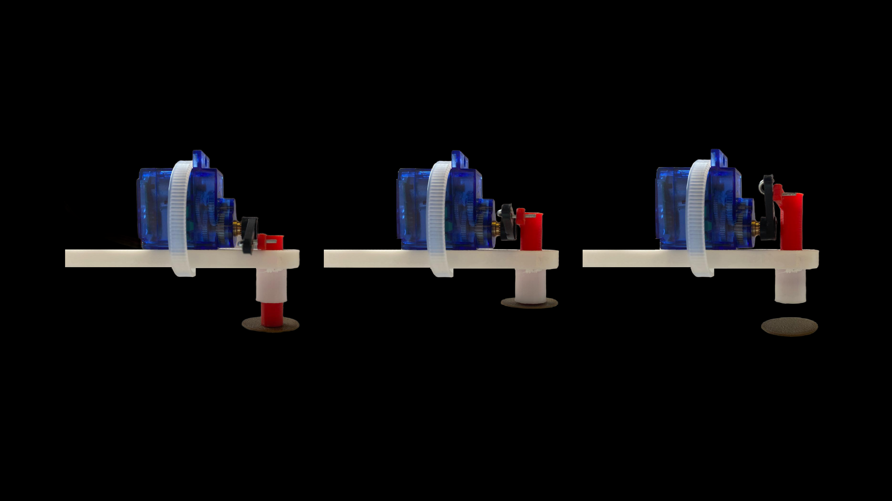
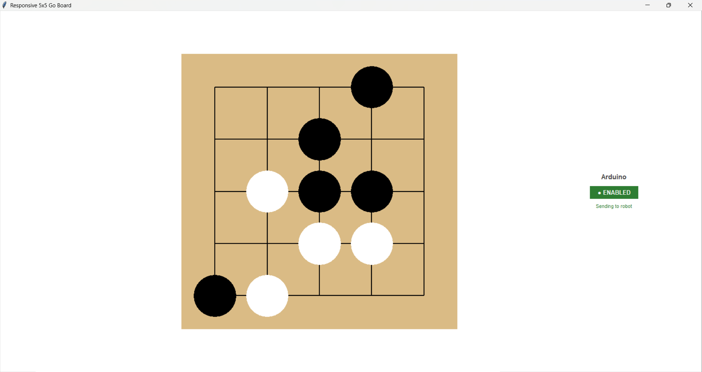
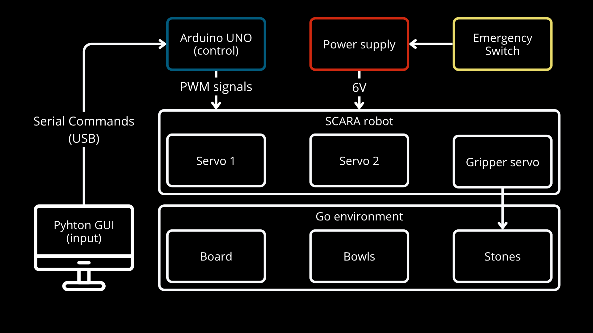

← All projects
Autonomous Go-Playing Robot

Outcome
Achieved reliable pick-and-place with a 3-DOF SCARA robotic arm built entirely from scratch. Diagnosed a mechanical backlash limitation in the arm and proposed fixes for it.
Motivation
An individual project to design, build and program a robotic arm capable of playing Go through pick-and-place manipulation — covering the full stack from mechanical design through to control software.
My Contribution
As an individual project, I owned every part of it: CAD design, actuator selection, embedded C++ firmware, and a Python GUI for control.
Skills & Learning
Technical Details
- 3-DOF SCARA configuration.
- Custom mechanical design in SolidWorks, including actuator selection.
- Embedded C++ firmware for motion control.
- Python-based GUI for operating the arm.
- Identified and proposed fixes for a mechanical backlash limitation.
What I Learned
- Turning board positions into joint angles with inverse kinematics, then calibrating the real robot against the maths using servo offsets and measured target coordinates.
- Keeping a Python GUI and an Arduino in step with a short, structured serial command format.
- How mechanical design choices (belt drive, joint tolerances, backlash) directly limit software accuracy.
- Taking a project from CAD to wiring to firmware to GUI on my own, and documenting it clearly.
Gallery




